Quando se pensa em acessibilidade na web e seus benefícios, é natural associar acessibilidade com responsabilidade social, melhoria da imagem das empresas/instituições e a disponibilização democrática de serviços, produtos e informações para as pessoas com deficiência. As pessoas com deficiência são as maiores beneficiadas, pois, na falta da acessibilidade na web, podem ter seu acesso prejudicado ou até mesmo impedido pelas barreiras impostas pela inacessibilidade. Mas, quando os sítios são verdadeiramente acessíveis, as pessoas com deficiência podem usufruir de todas as informações e serviços disponíveis na web. “A web é cada vez mais um recurso essencial em muitos aspectos da vida: educação, emprego, governo, comércio, saúde, diversão, interação social, e muito mais. É usada não apenas para receber informações, mas também para fornecer informações e interagir com a sociedade. Portanto, é essencial que seja acessível, a fim de proporcionar igualdade de acesso e de oportunidades para pessoas com deficiência.”Assim, a partir de uma web acessível, muitos cenários aparentemente improváveis tornamse possíveis, não só para pessoas com deficiência, mas também para qualquer categoria de usuário, tais como:
Uma mulher cega, utilizando um leitor de telas, pesquisa a restituição de imposto de renda no sítio da Receita Federal;
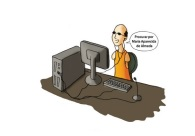Um homem cego e sem braços procura sua ex-professora em um sistema de busca utilizando um programa de reconhecimento de voz para entrar comandos no computador e receber retorno a partir do leitor de telas;
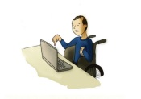Um homem com paralisia cerebral, com grandes dificuldades motoras e que só utiliza um dedo para teclar, atualiza seu perfil em uma rede social;
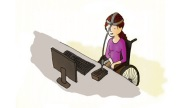Uma jovem tetraplégica, utilizando apenas um ponteiro na cabeça, procura informações sobre células-tronco em sítios especializados;
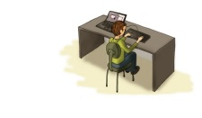Um senhor surdocego namora pela web, utilizando um dispositivo que mostra em Braille as informações exibidas na tela;
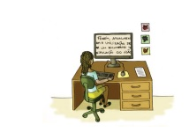Uma mulher com baixa visão procura informações sobre investimentos e a crise econômica mundial, utilizando um programa ampliador de tela;
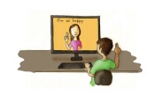Um jovem surdo ou com deficiência auditiva que faz um curso de inglês à distância.
Uma jovem com dificuldade de leitura, em virtude da combinação de transtorno do déficit de atenção com hiperatividade (TDAH) e dislexia, estudante do ensino médio, que gosta das aulas de literatura, complementa a leitura de livros e estudos por meio de aulas on-line. Ela utiliza um programa que realça o texto na tela, ao mesmo tempo em que é realizada uma leitura em voz alta . Fazendo uma analogia com o mundo físico, a maioria dos shoppings centers utiliza portas que abrem automaticamente quando as pessoas se aproximam. Isso possibilita que cadeirantes, pessoas com deficiência motora, idosos e mães com carrinhos de bebê entrem com facilidade no local, sem necessitarem do auxílio de terceiros. Essa característica acaba por facilitar a entrada e a saída do shopping a todas as pessoas, com e sem deficiência, nos mais diferentes contextos. No mundo digital, isso também funciona, pois, quando facilitamos o acesso e o uso para pessoas com deficiência e mobilidade reduzida, todos, de algum modo, acabam sendo beneficiados. Por exemplo, para se tornar acessível para pessoas com baixa visão, um hiperlink precisa apresentar bom contraste entre a cor do texto e o respectivo fundo, ter aparência clara de um hiperlink, destacar-se dos outros textos e hiperlinks, ter uma boa área para o clique/toque, fazer sentido quando lido fora de contexto e, principalmente, informar claramente seu destino. Todas essas características são fundamentais para que as pessoas com baixa visão consigam utilizá-los, e ainda acabam facilitando o acesso de todas as pessoas. Além disso, devido à universalidade e à grande versatilidade da Internet, os usuários atuam em contextos bastante diferentes, podendo estar inseridos em alguma das seguintes situações: não ter a capacidade de ver, ouvir ou deslocar-se, ou ter grande dificuldade, quando não mesmo a impossibilidade, para interpretar determinados tipos de informação; ter dificuldade para ler ou compreender textos; não ter um teclado ou mouse, ou não ser capaz de utilizá-los; ter uma tela que apresenta somente texto, uma tela de dimensões reduzidas ou uma ligação muito lenta com a Internet; não falar ou compreender fluentemente a língua em que o documento foi escrito; ter as mãos, os olhos ou os ouvidos ocupados, ou de outra forma solicitados (por exemplo, ao volante a caminho do trabalho, ou trabalhando num ambiente barulhento); ter uma versão muito antiga de um navegador, um navegador completamente diferente dos habituais, um navegador por voz, ou um sistema operacional menos comum . Para ilustrar melhor a importância da acessibilidade em diferentes contextos de uso da web, a seguir são apresentados alguns cenários em que pessoas sem deficiência são beneficiadas e usuárias diretas da acessibilidade:

Homem destro, com tendinite, faz pesquisa na web para trabalho da faculdade, utilizando com dificuldades o mouse, mas navegando com a mão esquerda sem encontrar barreiras de teclado na página;
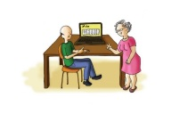Casal de idosos, já com alguma dificuldade para ler textos pequenos e que possui pouca experiência com a Internet, amplia o tamanho do texto para comprar passagens aéreas em promoção para visitarem o filho em outro estado;
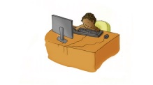Criança, ainda com linguagem em desenvolvimento, procura um jogo na web em uma página com animações que identificam o jogo que ela procura;
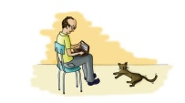Homem de meia-idade aumenta a fonte dos textos de um sítio ao navegar pelo seu netbook com tela de apenas 9 polegadas;
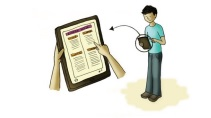Usuário procura os horários da sessão de cinema em seu tablet com tela de 7 polegadas e aumenta e diminui o tamanho do texto conforme sua necessidade de navegação;
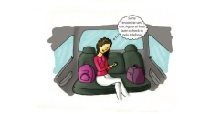Mulher atrasada tenta fazer check-in pelo sítio da companhia aérea utilizando seu smartphone no táxi, a caminho do aeroporto, em um formulário simples e de fácil compreensão;